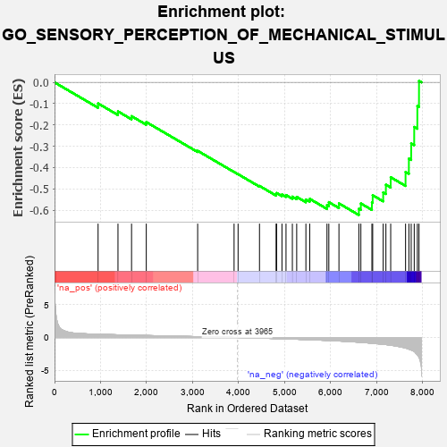
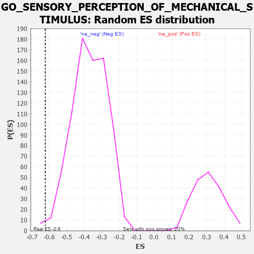

| | | Dataset | 7d |
| Phenotype | NoPhenotypeAvailable |
| Upregulated in class | na_neg |
| GeneSet | GO_SENSORY_PERCEPTION_OF_MECHANICAL_STIMULUS |
| Enrichment Score (ES) | -0.6224574 |
| Normalized Enrichment Score (NES) | -1.684007 |
| Nominal p-value | 0.00879397 |
| FDR q-value | 0.044935565 |
| FWER p-Value | 0.968 |
Table: GSEA Results Summary

Fig 1: Enrichment plot: GO_SENSORY_PERCEPTION_OF_MECHANICAL_STIMULUS
Profile of the Running ES Score & Positions of GeneSet Members on the Rank Ordered List
| PROBE | GENE SYMBOL | GENE_TITLE | RANK IN GENE LIST | RANK METRIC SCORE | RUNNING ES | CORE ENRICHMENT | | 1 | LRIG1 | | | 946 | 0.497 | -0.0989 | No |
| 2 | DRGX | | | 1378 | 0.414 | -0.1363 | No |
| 3 | BACE1 | | | 1673 | 0.360 | -0.1586 | No |
| 4 | ROR1 | | | 1993 | 0.306 | -0.1864 | No |
| 5 | GPX1 | | | 3109 | 0.135 | -0.3213 | No |
| 6 | NIPBL | | | 3900 | 0.010 | -0.4204 | No |
| 7 | EYA1 | | | 3987 | -0.006 | -0.4310 | No |
| 8 | KCNQ4 | | | 4452 | -0.085 | -0.4859 | No |
| 9 | P2RX4 | | | 4813 | -0.161 | -0.5247 | No |
| 10 | WDR1 | | | 4824 | -0.163 | -0.5193 | No |
| 11 | FZD4 | | | 4940 | -0.186 | -0.5262 | No |
| 12 | GRAP | | | 5028 | -0.204 | -0.5289 | No |
| 13 | TBX1 | | | 5166 | -0.241 | -0.5363 | No |
| 14 | SCN1A | | | 5260 | -0.261 | -0.5374 | No |
| 15 | LRIG2 | | | 5460 | -0.310 | -0.5499 | No |
| 16 | FGFR1 | | | 5543 | -0.332 | -0.5467 | No |
| 17 | KCNQ1 | | | 5918 | -0.441 | -0.5758 | No |
| 18 | PGAP1 | | | 5958 | -0.457 | -0.5621 | No |
| 19 | THRB | | | 6178 | -0.531 | -0.5680 | No |
| 20 | TUB | | | 6611 | -0.718 | -0.5932 | Yes |
| 21 | USH1G | | | 6654 | -0.740 | -0.5683 | Yes |
| 22 | HEXB | | | 6894 | -0.864 | -0.5632 | Yes |
| 23 | ESPN | | | 6911 | -0.873 | -0.5297 | Yes |
| 24 | WHRN | | | 7139 | -1.025 | -0.5165 | Yes |
| 25 | OTOF | | | 7198 | -1.069 | -0.4803 | Yes |
| 26 | MYO7A | | | 7302 | -1.175 | -0.4454 | Yes |
| 27 | TRPA1 | | | 7625 | -1.608 | -0.4204 | Yes |
| 28 | MYO6 | | | 7697 | -1.753 | -0.3579 | Yes |
| 29 | CASP3 | | | 7747 | -1.902 | -0.2866 | Yes |
| 30 | DCDC2 | | | 7813 | -2.099 | -0.2092 | Yes |
| 31 | FYN | | | 7881 | -2.622 | -0.1108 | Yes |
| 32 | ASIC2 | | | 7917 | -2.995 | 0.0068 | Yes |
Table: GSEA details [plain text format]

Fig 2: GO_SENSORY_PERCEPTION_OF_MECHANICAL_STIMULUS: Random ES distribution
Gene set null distribution of ES for GO_SENSORY_PERCEPTION_OF_MECHANICAL_STIMULUS